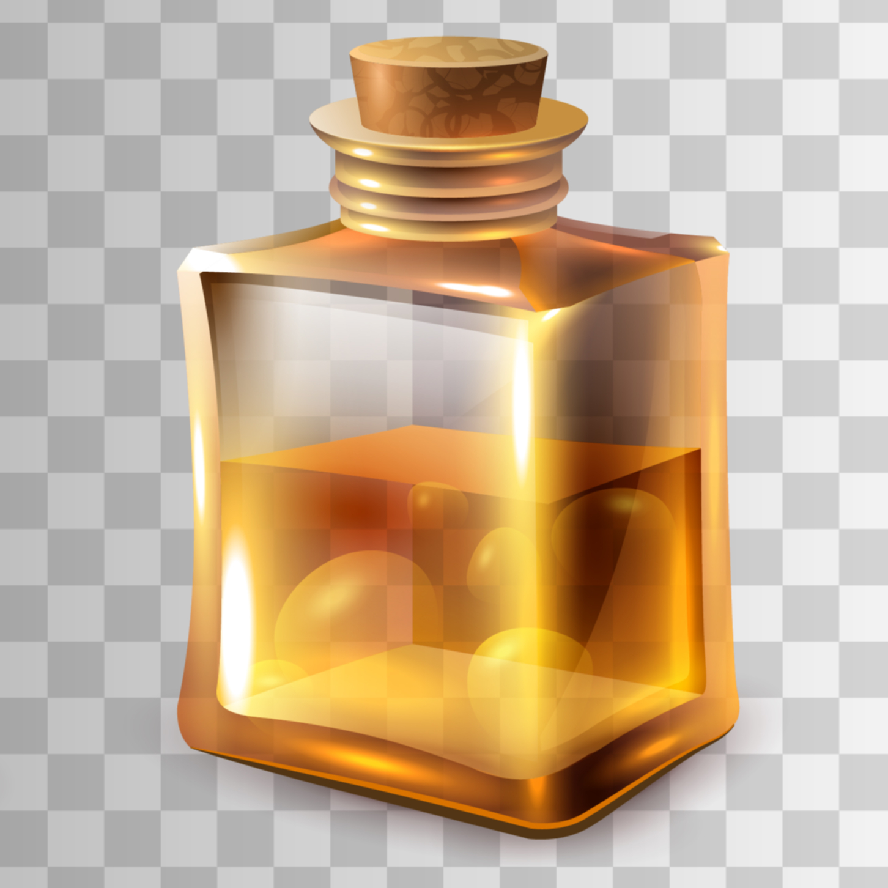
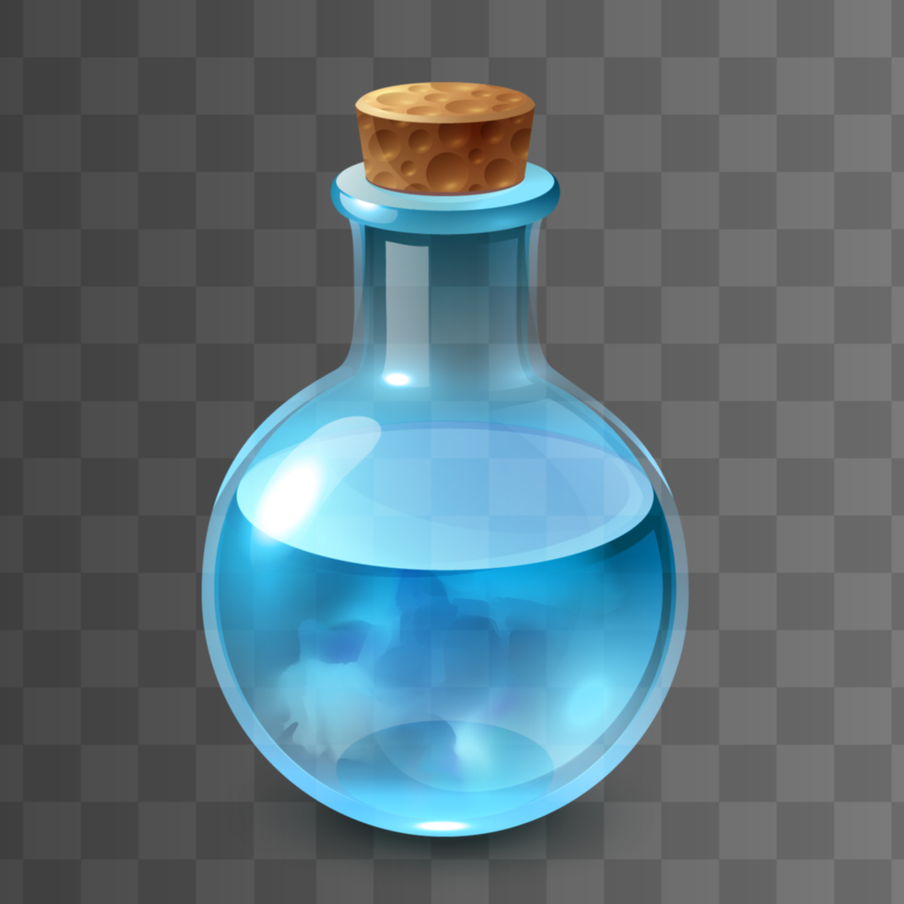
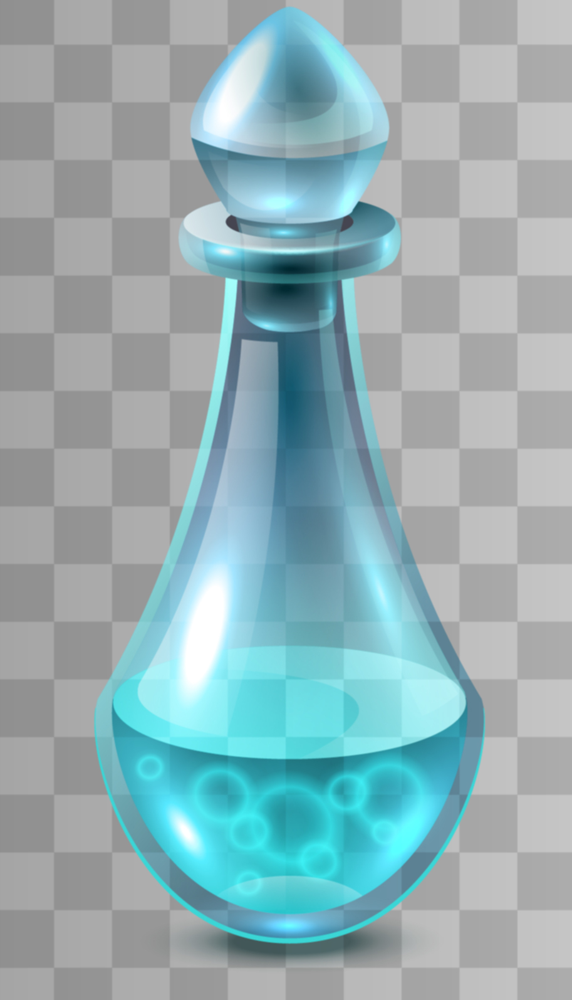
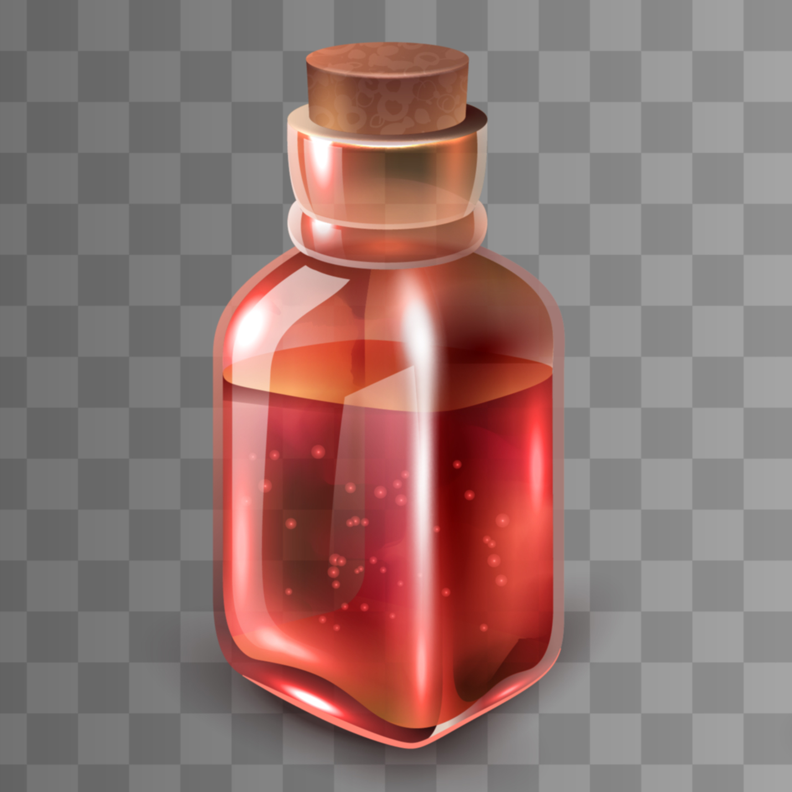

<!DOCTYPE html>
<html>
    <head>
        <meta charset="utf-8" />
        <title>Potion Recipes</title>
        <link rel="stylesheet" type="text/css" href="style.css">
    </head>
    <body>
        <script src="main.js" defer></script>
        <div id="bg-tint"></div>
        <div id="content">
            <!--
            <header>
                <h1>Beatrice's Potioncraft For Dummies</h1>
                <nav>
                    <ol>
                        <li>Introduction</li>
                        <li>Recipes</li>
                        <li>About</li>
                    </ol>
                </nav>
            </header>
            <main>
                <div class="recipe">
                    
                    <div class="desc">
                        <h2>Raiquidi Potion</h2>
                        <ul>
                            <li><h5>2.5 oz Aged Rum</h5></li>
                            <li><h5>0.75 oz Freshly Squeezed Lemon Juice</h5></li>
                            <li><h5>0.5 oz Simple Syrup</h5></li>
                            <li><h5>Shake with ice</h5></li>
                            <li><h5>Double strain into a chilled coupe</h5></li>
                        </ul>
                    </div>
                </div>
                <div class="recipe">
                    
                    <div class="desc">
                        <h2>Tarmini Potion</h2>
                        <ul>
                            <li><h5>2.5 oz Tanqueray No. 10</h5></li>
                            <li><h5>0.5 oz Noilly Prat Extra Dry Vermouth</h5></li>
                            <li><h5>2 dashes of Regan's Orange bitters</h5></li>
                            <li><h5>Lemon peel garnish</h5></li>
                        </ul>
                    </div>
                </div>
                <div class="recipe">
                    
                    <div class="desc">
                        <h2>Gyn And Tonyc Potion</h2>
                        <ul>
                            <li><h5>2 oz Gyn</h5></li>
                            <li><h5>1 Lime Juice</h5></li>
                            <li><h5>1 Half Lime as Garnish</h5></li>
                            <li><h5>5 to 6 oz Tonyc Water</h5></li>
                        </ul>
                    </div>
                </div>
                <div class="recipe">
                    
                    <div class="desc">
                        <h2>Kazekami Potion</h2>
                        <ul>
                            <li><h5>1.5 oz Vodka</h5></li>
                            <li><h5>1 oz Triple Sec</h5></li>
                            <li><h5>1 oz Freshly Squeezed Lime Juice</h5></li>
                            <li><h5>Lime wedge, for Garnish</h5></li>
                        </ul>
                    </div>
                </div>
            </main>
            -->
        </div>
    </body>
</html>
